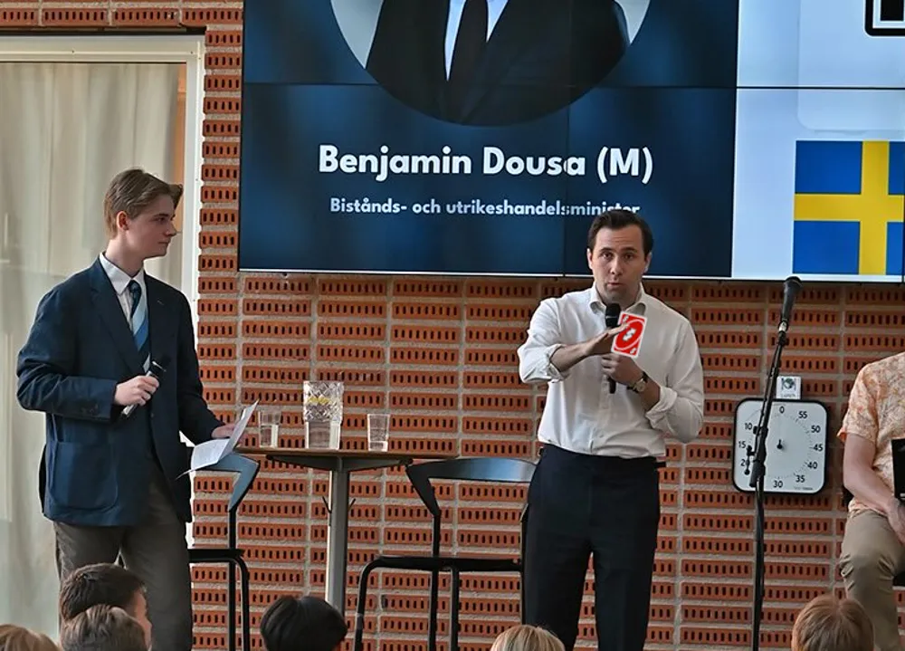

Politik

Dousa drar UNO reverse-kort för att undvika fråga
När Samuel Sosse ställde en fråga under Benjamin Dousas (M) besök på Östra Gymnasiet så svarade Dousa med det mest oväntade svaret i Östra Gymnasiets historia – ett UNO reverse-kort. Sosse hävdar att kortet enligt regelboken faktiskt bara inverterar spelets turordning, och på det svarade Dousa med att dra fram ett till likadant kort.
Dousa tackade ja till en intervju och när Löken frågade varför han gjorde det svarade han följande: "Jag tycker inte så mycket om att svara på frågor, speciellt inte från folk". Löken försökte ställa fler frågor, men Dousa hade fler reverse-kort på hand än Lökens reporter. Lökens reporter hängde sig strax efter. Trots att redaktionen försökte använda ett reverse-kort på liket så är reportern fortsatt avliden.
När Sosse intervjuades om saken hävdade han att han läst hela regelboken för UNO och att det står att reverse-kortet bara byter riktning på spelet, inte skickar tillbaka det tidigare spelade kortet. Sosse hävdar att Dousa därför bör bli diskad och inte få ha fler frågestunder på skolor. På det svarar Dousa att det skulle vara ett helt inhumant straff för en sådan liten företeelse och att ingen spelar enligt den regeln ändå.
Östra Löken har slutit avtal med UNO-tryckeriet för att köpa en stor mängd reverse-kort för att kunna fortsätta göra politiska intervjuer i framtiden. Alla klagomål och kommentarer på denna artikel kommer att besvaras med ett av dessa UNO reverse-kort.